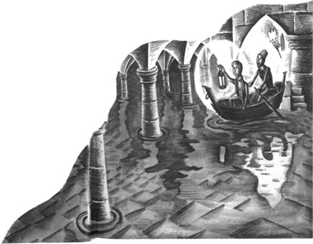
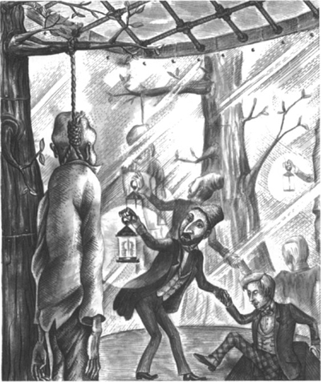
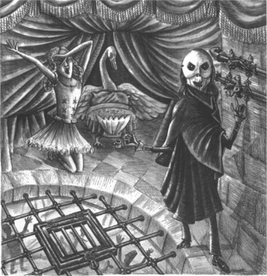
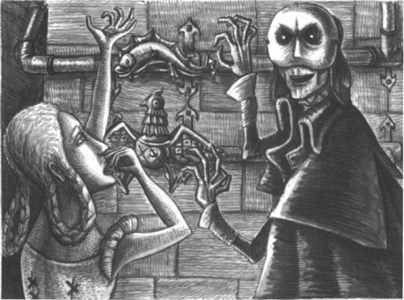

10
Listen to Part 1:

Hồ nước và Cây
Tôi là Ba Tư. Tôi biết hết mọi bí mật của Nhà hát Opera. Tôi biết hết các cầu thang và dãy hành lang bên dưới sân khấu. Raoul đi phía sau tôi. Nhưng chuyến đi hết sức nguy hiểm. Ngọn đèn của tôi không sáng lắm. Chúng tôi phải đi qua nhiều nơi tối tăm.
Mười phút sau, chúng tôi đã ở tận trong tầng hầm sâu bên dưới Nhà hát Opera.
Ở tầng hầm thứ sáu bên dưới mặt đất, chúng tôi đặt chân đến một tầng hầm rất lớn. Trong tầng hầm này chứa toàn bộ bối cảnh của các vở opera. Có một tòa lâu đài lớn màu xám. Nó được làm bằng gỗ. Có những bức tượng ngựa và vua bằng gỗ. Có một khu vườn hoa giấy màu đỏ và những cái cây bằng gỗ màu xanh.
Tôi nói với Raoul: ‘Lũ cảnh sát đã đến tầng hầm này. Họ không tìm thấy Christine ở đây. Họ đã quay ra. Họ đã trở về sân khấu. Nhưng chúng ta phải đi tiếp.’
Chúng tôi đi đến cuối kia của tầng hầm lớn. Có một cánh cửa trên tường. Nhưng cánh cửa cách mặt đất tới hai mét. Chúng tôi đi lên những bậc thang dẫn đến cánh cửa này.
Tôi nói: ‘Đây là hồ nước.’
Tôi mở cánh cửa và chúng tôi nhìn vào tầng hầm bên cạnh. Chúng tôi không nhìn thấy đáy tầng hầm đó. Nó ngập nước.
Nước dâng tới tận đáy cánh cửa. Tôi giơ cao ngọn đèn lên. Raoul nhìn quanh tầng hầm khổng lồ.
Tôi nói: ‘Tầng hầm này là một hồ nước. Độ sâu của nước khoảng hai mét.’
Listen to Part 2:
Raoul hỏi: ‘Nước ở đâu ra mà nhiều thế?’
Tôi đáp: ‘Nước chảy từ một dòng sông. Bây giờ chúng ta phải băng qua hồ nước!’
Có một con thuyền nhỏ ở gần cửa. Raoul và tôi bước vào thuyền và tôi chèo thuyền qua hồ nước.
Raoul hỏi tôi: ‘Trước đây anh có từng đến đây chưa?’
Tôi đáp: ‘Tôi đã từng đến đây một lần. Tôi định tìm Erik. Nhưng hắn không ở nhà.’

Ở bờ bên kia của hồ nước có một cánh cửa khác. Đáy cửa cách mặt nước vài xentimét. Tôi chèo thuyền đến cánh cửa. Tôi mở cánh cửa và chúng tôi ra khỏi thuyền. Chúng tôi đi qua cánh cửa và đi dọc theo một dãy hành lang ngắn. Sau đó, chúng tôi bước lên những bậc thang. Chúng tôi đi vào một tầng hầm lớn khác.
Tôi nói: ‘Giờ chúng ta phải im lặng, Raoul. Chúng ta đã gần nhà của Erik. Nó ở trên tầng hầm thứ năm bên dưới mặt đất.’
Raoul hỏi: ‘Còn Christine thì sao?’
Tôi trả lời: ‘Cô ấy ở trong nhà của Erik. Đừng lo cho Christine, Raoul. Erik sẽ không làm hại Christine. Chúng ta sẽ sớm gặp cô ấy thôi. Nhưng chúng ta sẽ không đi vào cửa trước nhà Erik.’
Listen to Part 3:
Tôi tìm thấy một cửa sập trên sàn. Tôi mở nó ra và nhìn vào một lỗ hổng tối om trên sàn.
Tôi nói: ‘Chúng ta phải chui xuống đó, Raoul. Có một tầng hầm khác ở dưới đó. Chúng ta sẽ đi qua tầng hầm đó. Sau đó, chúng ta sẽ chui lên một cửa sập khác để vào nhà của Erik. Tôi sẽ đi trước. Hãy cầm đèn hộ tôi.’
Tôi ngồi xuống mép lỗ và thò chân và chân xuống bóng tối. Sau đó, tôi nhảy xuống lỗ. Tôi nhảy xuống một sàn đá.
Tôi gọi với theo Raoul: ‘Đưa đèn cho tôi. Cái lỗ không sâu lắm đâu. Anh hãy nhảy xuống đây.’
Một lát sau, cả hai chúng tôi đều đang đứng trên sàn đá.
Đột nhiên, có tiếng động phía trên đầu. Tôi giơ đèn lên. Có ai đó đã đóng cửa sập!
Tôi nói: ‘Erik đã nhìn thấy chúng ta. Giờ chúng ta phải hết sức cẩn thận, Raoul.’
Chúng tôi nhìn quanh. Chúng tôi đang ở trong một tầng hầm nhỏ. Có một cái thang sắt trên tường ở phía bên kia của căn hầm. Phía trên cái thang có một cửa sập khác. Chúng tôi trèo lên cái thang trong im lặng. Tôi mở cửa sập và chúng tôi trèo lên qua cửa sập đó.

Chúng tôi đặt chân đến một căn phòng rất lạ. Căn phòng có hình tròn. Có nhiều gương trên tường. Có một cái cây bằng kim loại ở giữa phòng. Và có một người đàn ông đã chết treo lơ lửng trên cái cây! Cổ ông ta có một sợi dây thừng.
Listen to Part 4:
Chúng tôi đi về phía cái cây. Tôi nhìn người đàn ông đã chết. Tôi biết ông ta.
Tôi nói với Raoul: ‘Thật kinh khủng! Người đàn ông này là một trong những nhạc công trong dàn nhạc. Ông ấy đã biến mất từ một tuần trước. Erik đã giết nhạc công này. Giờ thì tôi hiểu rồi. Erik bị điên!’
Có tiếng động lớn phía sau chúng tôi. Chúng tôi quay lại thật nhanh. Có ai đó đã đóng cửa sập ở trên sàn!
Tôi chạy đến cửa sập và cố gắng mở nó. Nhưng nó đã bị khóa!
Tôi nhìn quanh căn phòng. Tôi nhìn những tấm gương trên tường. Trong mỗi tấm gương, tôi đều nhìn thấy Raoul và chính tôi. Và trong mỗi tấm gương, tôi đều nhìn thấy cái cây bằng kim loại và người đàn ông đã chết! Chúng tôi không thể rời khỏi căn phòng kinh hoàng này được.
Chúng tôi đi đến cái cây bằng kim loại. Raoul cắt sợi dây thừng và tôi đặt người đàn ông đã chết xuống đất.
Sau đó, tôi nhìn lên. Có một khung kim loại trên trần của căn phòng tròn. Có một cửa sập trên khung kim loại này. Nó cách đầu chúng tôi tới hai mét. Chúng tôi không thể chạm tới nó.
Ánh sáng lọt qua khung kim loại. Đó là ánh sáng đèn khí.
Tôi khẽ nói: ‘Chúng ta đang ở trong nhà của Erik. Hắn ở trong căn phòng phía trên chúng ta.’
Chúng tôi nhìn lên qua khung kim loại. Chúng tôi thấy bức tường của căn phòng phía trên chúng tôi. Trên tường có hai cái tay nắm kỳ lạ. Đó là những cái tay nắm kim loại lớn. Một cái có hình một con chim ôi đôi cánh lớn - con đại bàng. Cái kia có hình một con cá.
Listen to Part 5:
Có tiếng động trong căn phòng phía trên chúng tôi. Bỗng nhiên, có hai người nhìn xuống chúng tôi. Họ nhìn xuống qua khung kim loại. Một người là đàn ông cao lớn. Ông ta mặc một chiếc áo choàng đen và đeo một chiếc mặt nạ trắng. Người kia là một cô gái trẻ xinh đẹp.

Raoul gọi: ‘Christine! Christine!’
Christine nhìn xuống qua khung kim loại. Cô không nói gì.
Raoul lại gọi: ‘Christine, cô ta là ai?’ Anh ta chỉ vào người đàn ông cao lớn.
Tôi trả lời câu hỏi của Raoul. Tôi nói với người đàn ông đeo mặt nạ trắng.
Tôi hét lớn: ‘Erik! Ngươi điên rồi! Chúng ta muốn rời khỏi ngôi nhà này. Và chúng ta muốn đưa Christine đi cùng!’
Erik nói: ‘Không, Ba Tư! Các ngươi không thể đi đâu được. Ta phải giết cả hai tên! Christine sẽ ở lại đây. Cô ta là của ta. Christine yêu ta.’
Raoul hét lên: ‘Christine à, có thật vậy không? Cô có yêu người đàn ông này không? Nói cho ta biết, Christine!’
Erik bắt đầu cười. Chúng tôi nghe tiếng cười của một kẻ điên!
Listen to Part 6:
Hắn hỏi: ‘Căn phòng đó nóng lắm sao?’ Giọng hắn tàn nhẫn và điên dại.
Lời nói của Erik có ý gì? Tôi sợ lắm!
Đột nhiên, Raoul đi đến một trong những tấm gương. Anh ta nhanh chóng chạm vào nó.
Anh ta nói: ‘Những tấm gương này nóng lắm!’
Lúc đó tôi mới hiểu câu hỏi của Erik. Những tấm gương rất nóng. Căn phòng rất nóng. Những tấm gương đang làm nóng căn phòng. Chúng tôi khó thở. Raoul và tôi di chuyển ra giữa phòng. Nhưng chúng tôi nghe tiếng Erik vọng qua khung kim loại. Hắn đang nói chuyện với Christine. Christine đang khóc.
Erik nói: ‘Bạn bè của cô sẽ chết. Chúng sẽ bị thiêu cháy.’
Erik nói tiếp: ‘Nhưng cô có thể cứu họ, Christine.’
Christine hỏi: ‘Tôi có thể cứu họ bằng cách nào?’
Erik nói: ‘Cô phải lựa chọn, Christine. Chọn ta hoặc chọn người tình trẻ của cô! Cô phải chọn một trong hai chúng ta. Và cô phải chọn con đại bàng hoặc con cá.’
Christine nói: ‘Tôi không hiểu ông nói gì.’
Listen to Part 7:
Erik nói: ‘Hãy nhìn những cái tay nắm trên tường. Những cái tay nắm đó mang lại lửa và nước. Cô phải xoay một trong những cái tay nắm. Con đại bàng mang lại lửa. Con đại bàng sẽ làm cho những tấm gương nóng hơn. Những người bạn của cô sẽ chết. Nhưng họ sẽ chết nhanh thôi. Họ sẽ bị thiêu cháy!’
Erik nói: ‘Con cá mang lại nước. Con cá sẽ hấp hơi nóng từ những tấm gương. Nhưng con cá cũng có một bí mật. Hãy nhớ lấy nhé, Christine! Con cá có thể sống dưới nước. Nhưng con người thì không thể sống dưới nước!’

Mục lục
- Tiêu đề
- Nội dung
- Lưu ý về tác giả
- Lưu ý về câu chuyện này
- Nhân vật trong câu chuyện này
- 1 Thiên thần âm nhạc
- 2 Bữa tiệc tại nhà hát nhạc kịch
- 3 Raoul đến nhà hát nhạc kịch
- 4 Ghế số 5
- 5 Gương trong phòng trang điểm
- 6 Vũ hội đeo mặt nạ
- 7 Câu chuyện của người Ba Tư
- 8 Christine biến mất!
- 9 Bên dưới nhà hát nhạc kịch
- 10 Hồ nước và cây cối
- 11 Bóng ma trong nhà hát nhạc kịch
- Bản quyền